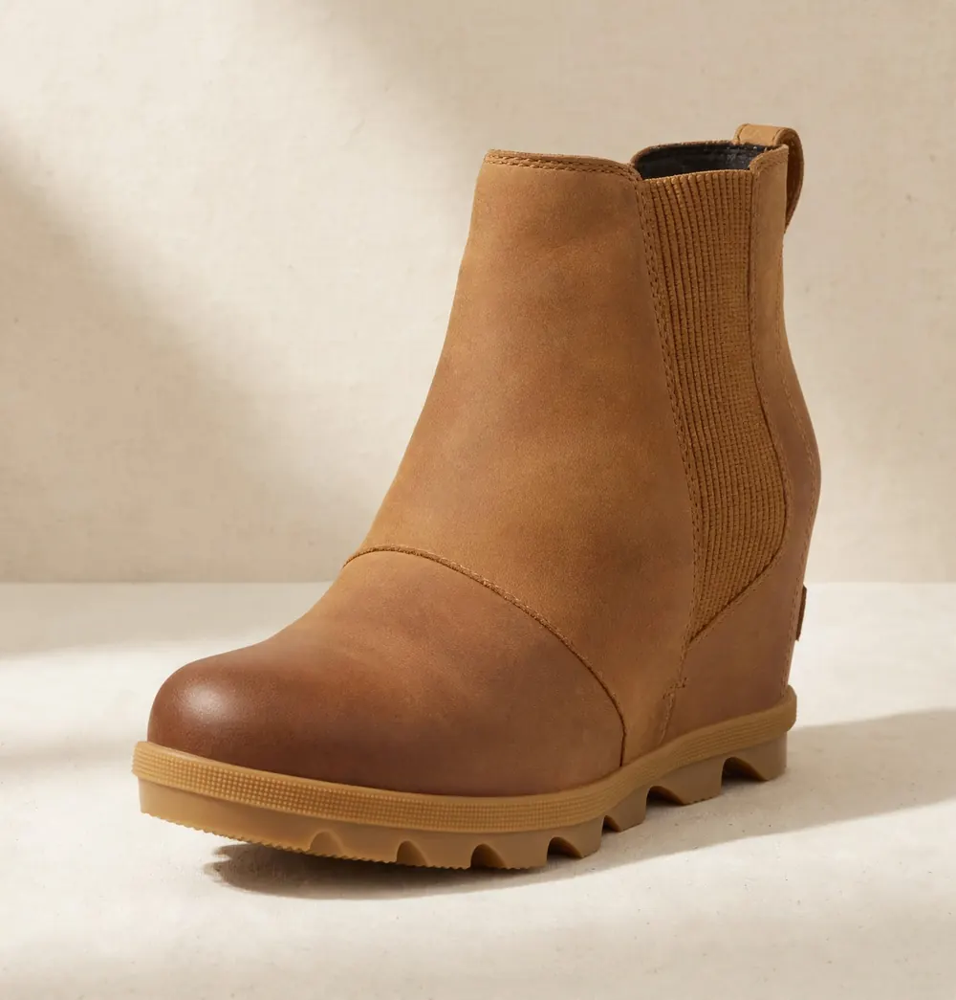
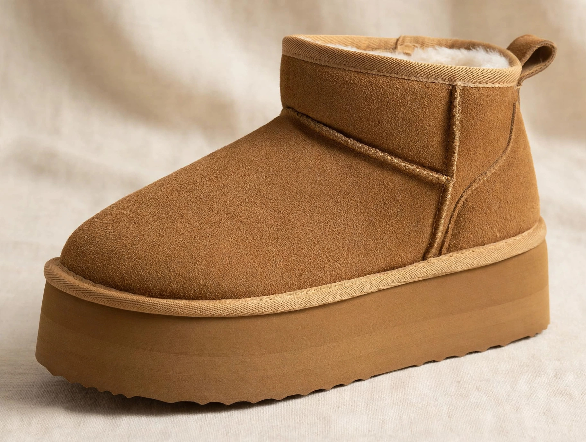

The chunky Chelsea boot solved the oldest problem in fall footwear: how to get the polish of a boot, the comfort of a sneaker, and enough grip to survive a wet sidewalk — in one pull-on shoe. The best chunky Chelsea boots for women on Amazon pair that elastic-gore Chelsea silhouette with a thick lug sole and a real heel, and they have become the default boot under everything from knit dresses to wide-leg trousers. The catch is that 'chunky' covers everything from a sturdy 2.3-inch heel to a fashion platform, and comfort claims on Amazon are cheap — so ratings depth and sole construction are what separate the keepers.
Our catalog carries two true chunky Chelsea boots, and this guide treats them properly: the Athlefit, a 4.5-star lug-sole Chelsea with nearly 4,000 ratings and a choice of suede or faux leather uppers, and the Soda Pilot, the 4.7-star lug-sole bootie with more than 21,500 ratings — the deepest buyer base of any boot we carry. Then, labeled clearly as an alternative rather than a Chelsea, we add the Cushionaire platform ankle boot for women who want the chunky platform height with a cozy faux-fur lining instead of elastic gores. Three honest options, each with a distinct job.
Style them the way the season intends: under the coats in our oversized trench coats guide, with the knits in our oversized sweaters guide, or as the grounding note under a sweater dress. A chunky Chelsea is the piece that makes all three outfits read finished.
As an Amazon Associate, LOOKIQ earns from qualifying purchases.
Quick Comparison: The Best Chunky Chelsea Boots for Women on Amazon in 2026
The full shortlist at a glance. Prices and ratings are from the LOOKIQ catalog, checked October 2026 — Amazon prices move often, so confirm the live price on the product page before you buy. The third row is a platform ankle boot, included as a labeled alternative, not a Chelsea.
| Pick | Style | Rating | Price | Best For |
|---|---|---|---|---|
| Athlefit Chelsea Boots Lug Sole | Chunky lug-sole Chelsea | 4.5★ | $59.99 | Best overall Chelsea |
| Soda Pilot Chunky Chelsea Booties | Lug-sole Chelsea bootie | 4.7★ | $39.98 | Best value, most reviewed |
| Cushionaire Hippy Platform Ankle Boots | Platform ankle boot (not a Chelsea) | 4.5★ | $42.99 | Cozy platform alternative |
Our Picks, Reviewed — Two Chelseas, One Alternative
Ordered the way the decision happens: the full-featured Chelsea first, the value Chelsea second, and the cozy platform alternative last, with its non-Chelsea status stated plainly.
1. Athlefit Chelsea Boots Lug Sole — Best Overall Chunky Chelsea

The Athlefit is the complete chunky Chelsea formula in one boot. The thick lug sole is designed for steady steps with strong grip and anti-skid performance, the elastic gore side panels make it a true slip-on, and a heel loop assists entry when you are heading out the door. The 2.3-inch chunky heel gives real height — enough to change how trousers and dresses fall — while the platform-style lug construction keeps that height walkable, and a soft lining keeps long shopping days comfortable. Buyers rate it 4.5 stars across nearly 4,000 ratings, the strongest combination of rating and depth in this category.
It also offers the choice the Soda does not: a fashion suede upper or a faux leather upper, so you can pick your texture — suede for softness with knits and dresses, faux leather for wetter weather and easier wiping clean. Athlefit positions it for everything from leisure and street wear to work, school and parties, and that range is credible precisely because the silhouette is a clean Chelsea: no laces, no buckles, nothing to date it. If you buy one pair from this guide, this is the pair. Why we picked it: the full Chelsea checklist — lug grip, elastic gores, heel loop, two upper choices — at a 4.5-star rating. Best for: most women, and every outfit from denim to dresses. See the full review or check the price on Amazon.
2. Soda Pilot Chunky Chelsea Booties — Best Value, Most Reviewed

The Soda Pilot is the boot the internet already voted on: 4.7 stars across more than 21,500 ratings, at $39.98 — the highest rating and the lowest price of any true Chelsea in this guide. The construction explains the following. A 1.8-inch block heel balanced by a 1-inch front lug platform gives stylish height without straining the foot arch, a high-comfort memory footbed cushions the step, and wide elastic stretch side gores with dual front and back pull tabs make entry genuinely effortless — no shoehorn gymnastics at the door.
It is also the weather pick of the two Chelseas: the smooth synthetic leather upper has a waterproof matte finish, and the thick rubber lug sole provides traction and water resistance against rain and wet sidewalks. That combination — platform height, memory foam comfort, rain tolerance, and a price under $40 — is why the ratings depth here dwarfs everything else in the category. If your fall involves actual walking in actual weather, and your budget involves actual limits, the Soda is not the compromise pick. It is the pick. Why we picked it: 4.7 stars, 21,500-plus ratings, memory footbed and a waterproof finish for under $40. Best for: walkers, wet-weather commuters, and value-first buyers. See the full review or check the price on Amazon.
3. Cushionaire Hippy Platform Ankle Boots — Cozy Platform Alternative — Not a Chelsea

The honest label first: this is a platform ankle boot, not a Chelsea boot — there are no elastic side gores, and we are not going to pretend a slip-on mini boot is a Chelsea because the keyword would like it to be. What it offers instead is the other half of the chunky-boot appeal: genuine suede on the outside, a plush faux fur lining on the inside, and an easy slip-on platform profile, rated 4.5 stars. It is the cozy option — the boot you pull on with leggings and knit dresses when comfort and warmth outrank the Chelsea's sleek, rain-ready line.
Choose it if your fall footwear problem is cold feet and casual outfits rather than wet commutes and polished styling: it pairs with cuffed denim, leggings and knit dresses, the soft end of a fall wardrobe. Choose the Athlefit or the Soda if you need elastic-gore entry, lug grip and a silhouette that works with tailoring. Both decisions are right for somebody — this guide's job is to make sure you know which boot you are actually buying, and at $42.99 the Cushionaire earns its place on its own merits. Why we picked it: genuine suede, faux-fur warmth and platform height — a different, cozier answer to the chunky boot question. Best for: cozy casual styling with leggings, denim and knit dresses. See the full review or check the price on Amazon.
How to Choose Chunky Chelsea Boots: A Buying Guide
Sole and Heel: Where Chunky Boots Succeed or Fail
Read the sole before the silhouette. A true lug sole — deep, rugged tread like the Athlefit's and the Soda's thick rubber lugs — is what makes a chunky boot a walking boot rather than a costume: it grips wet sidewalks and resists the slips that smooth fashion soles invite. Heel height needs its platform context: the Soda's 1.8-inch block heel over a 1-inch front platform nets far less arch strain than the raw number suggests, and the Athlefit's 2.3-inch chunky heel spreads weight across a wide base. If you plan to walk real distances, prioritize the lug tread and a cushioned footbed — the Soda's memory footbed is the standout spec in this guide — over an extra half inch of height.
Upper Material and Weather: Suede, Synthetic, or Faux Leather
Match the upper to your sky. The Soda Pilot's waterproof synthetic matte finish is the rain answer: it shrugs off wet sidewalks and wipes clean. The Athlefit lets you choose — a fashion suede upper for softness and a more premium look in dry weather, or faux leather for easier care. The Cushionaire's genuine suede with faux fur lining is the warm, dry-day option, and suede always asks for a protector spray and a dry forecast. A simple rule: if your boots will meet November rain weekly, buy the synthetic Chelsea; if they will meet coffee shops and dry leaves, suede's texture wins. Either way, elastic gore panels that stretch wide — like both Chelseas here — decide whether pull-on stays convenient in month six.
Fit, Entry, and What to Wear Them With
Chelsea boots have no laces, so the fit has to be right out of the box: snug through the heel and midfoot with room at the toe, and gores that stretch enough to enter without a fight — dual pull tabs, like the Soda's front and back tabs, or a heel loop like the Athlefit's, are the details that make daily wear realistic. Wear the socks you actually plan to use when judging fit, and remember that a platform boot changes your trouser break: cropped denim, midi dresses and wide-leg trousers that end above the boot shaft show the boot off, while skinny styles tuck cleanly. For the full fall formula, pair them with the coats from our winter fashion guide and a crossbody from our crossbody bags under $50 guide — hands free, hem clear, done.
Chunky Chelsea Boot FAQs
What are the best chunky Chelsea boots for women on Amazon in 2026?
Our top pick is the Athlefit Chelsea Boots Lug Sole — 4.5 stars, a thick anti-skid lug sole, elastic gore panels and a 2.3-inch chunky heel for $59.99. The best value is the Soda Pilot Chunky Chelsea Booties: 4.7 stars across more than 21,500 ratings, a memory footbed and a waterproof matte finish for $39.98. Both are true pull-on Chelseas with elastic side gores.
Are chunky Chelsea boots comfortable for walking all day?
The right pair is. Look for a lugged sole with a front platform, which reduces the effective heel pitch, and a cushioned footbed — the Soda Pilot pairs its 1.8-inch block heel with a 1-inch front platform and a high-comfort memory footbed specifically so the height does not strain the foot arch. The Athlefit adds a soft lining for long days. Smooth-soled fashion boots without tread or cushioning are the ones to avoid for real walking.
Are chunky Chelsea boots waterproof?
Some are weather-ready and some are not — check the upper. The Soda Pilot uses a waterproof synthetic matte finish and a thick rubber lug sole that provides traction and water resistance against rain and wet sidewalks. Suede uppers, like the Athlefit's suede option and the Cushionaire's genuine suede, are dry-weather choices that benefit from a protector spray. When in doubt, choose the synthetic upper for a wet climate.
What is the difference between Chelsea boots and regular ankle boots?
A Chelsea boot is defined by its elastic side gore panels, which let it slip on and off without laces, zippers or buckles, and give it its clean, unbroken silhouette. A regular ankle boot — like the Cushionaire platform boot in this guide — may lace, zip or simply slip on as a mini boot, without the elastic-gore construction. The gore is not a detail; it is the definition, which is why we label non-Chelsea boots honestly.
How do you style chunky Chelsea boots?
Show the boot: cropped or cuffed denim, midi dresses and skirts, and wide-leg trousers that end above the shaft all let the lug sole do its work. Chunky Chelseas ground oversized outfits — a trench coat and an oversized sweater with a chunky boot is the defining fall proportion — and they toughen feminine pieces like knit dresses. Black Chelseas are the most versatile; suede reads softer with knits.
Do chunky Chelsea boots run true to size?
Chelsea boots should fit snugly through the heel and midfoot with toe room, because there are no laces to adjust. Both Chelseas in this guide are bought in buyers' usual sizes, but judge fit wearing the socks you plan to use, and use the elastic gores and pull tabs — wide-stretch gores and dual pull tabs on the Soda, a heel loop on the Athlefit — as your entry test on day one, while returns are easy.
The Quick Verdict
Buy the Athlefit for the complete chunky Chelsea — grip, gores, heel and two uppers. Buy the Soda Pilot for the smartest money in fall footwear: 4.7 stars, a memory footbed and rain tolerance under $40. And buy the Cushionaire only for what it honestly is — a cozy suede platform boot. That is the shortlist — two true Chelseas, plus one alternative that earned its mention.